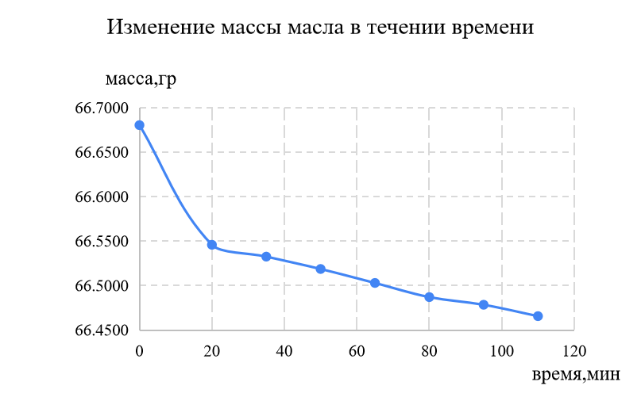
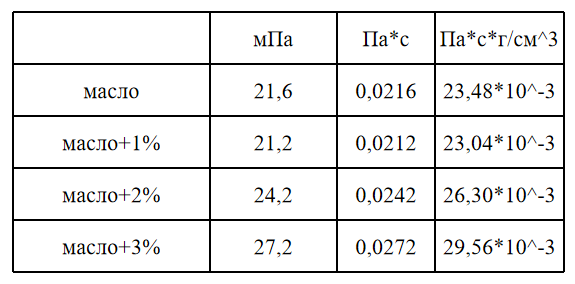

- Изучение рапсового масла
- Мы изучали рапсовое масло на вязкость, прозрачность, цвет и запах

- Определение содержания влаги и летучих веществ
- Высушивали масло при температуре 100° С. Первое взвешивание произвели после 20 минут, а последующие взвешивания проводили каждые 15 минут
- С помощью формулы мы вывели массовую долю влаги и летучих веществ, она составила 4,3% - Определение вязкости масла
- Мы смешали гидрофобины с маслом и увидели как они влияют на вязкость. Температура масла для измерения 24,8° С
- 1% - 0,4 грамма
- 2% - 0,8 грамм
- 3% - 1,2 грамма

Предыдущая страница